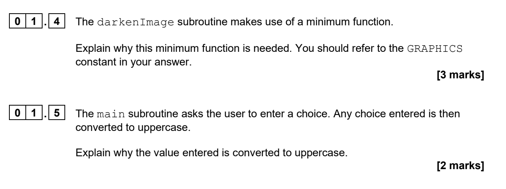
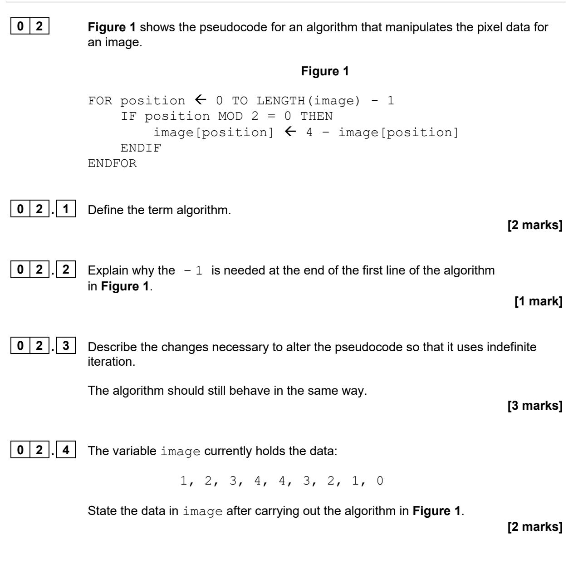

Work through authentic November 2024 Paper 1 questions using the original preliminary material, skeleton program and test files.
SECTION A · ANALYSESECTION B · MODIFYAO3 · EVIDENCE
Interactive examination skills lab
Start your learning record
Your answers and evidence save on this device. At the end, download one PDF and submit it to Teams.
No account required · No data leaves this browser
What are we getting better at?Turning written requirements into correct, tested and evidenced changes to an existing program.
Saved
00
Lesson map
Paper 1 Skills Lab
60 minutes
Original-question safeguard
Every official question is displayed as an image captured directly from the supplied November 2024 question paper. Guidance appears separately and does not replace, shorten or rewrite the official wording.
Lesson objective
Analyse and trace the November 2024 skeleton program, then implement, test and evidence a required modification.
Knowledge
Parameters, local variables, selection, iteration, indexing, accumulators and run-length encoding.
Skills
Navigate code, trace state, explain behaviour, modify a subroutine and provide valid evidence.
Understanding
Recognise where a program event occurs, why the final run needs separate processing and how evidence earns marks.
Review and download the examination resources before beginning.
01
Before you begin
November 2024 resources
No mark scheme
Know the examination package
Open the preliminary material and question paper, then download the skeleton program and three image-data files before starting. The mark scheme is deliberately not included.
This is also supplied as one.txt for the official Question 04 test.
Keep these files together in the same working folder.
02
Starter · 5 minutes
Find it fast
AO3 · Navigate
Use the skeleton program. Do not run it. Answer Questions 01.1–01.3 in order and record the line number where you found evidence for 01.1 and 01.2.
Original November 2024 question paper · Question 01.1–01.3
Save your answers before learning the tracing method.
03
Skill Clinic 1 · 5 minutes
Trace without guessing
Prepare
Read firstA method for accurate tracing
Record all starting values.
Follow one iteration at a time.
Evaluate the selection condition before changing a value.
Record only the variables affected by the statement.
Record output exactly when an output statement executes.
Small practice
image = [0, 2, 4]
for position in range(len(image)):
image[position] = max(image[position] - 1, 0)
position
Value before
Calculation
Value after
0
0
max(0 - 1, 0)
0
1
2
Check
The final list is [0, 1, 3]. The limiting function prevents a pixel value from falling below the permitted minimum of 0.
Now apply the method to the official Section A questions.
04
Main Activity 1 · 20 minutes
Analyse the skeleton
AO3 · 20 marks
Section A conditionsUse the preliminary material and unmodified skeleton program.Do not run or change the program.Do not use previous holiday answers.Original November 2024 question paper · Question 01.4–01.5

Original November 2024 question paper · Question 02.1–02.4

Original November 2024 question paper · Question 03.1–03.2
03.1 Electronic trace table
Type directly into each cell
Add rows when needed. Blank cells are allowed where the original trace table would remain unshaded.
current
count
position
item
OUTPUT
Before moving on
Check indexing, the moment a run changes, and when output occurs. The mark scheme is not available in this app.
Your Section A responses and trace table will be included in the final PDF.
05
Skill Clinic 2 · 4 minutes
Count events, not iterations
Prepare
Read firstAccumulator and final-event logic
An accumulator starts with a known value and is updated whenever a relevant event occurs. In RLE, the event is the completion of a run—not every loop iteration. The final run may not trigger a “value changed” condition, so it may need separate processing after the loop.
Small practice
2, 2, 2, 4, 4, 1
Check
There are 3 runs: (3,2)(2,4)(1,1), requiring 6 bytes. The final (1,1) run must be processed after the loop if output happens only when a value changes.
Apply this idea without copying the example into the official task.
06
Main Activity 2 · 16 minutes
Modify, test and evidence
AO3 · 7 marks
Work from a fresh skeleton copy. The exact official question appears below. Use zero.txt for the requested test.
Original November 2024 question paper · Question 08.1–08.2
08.1
Complete amended source code
Paste all the program source code for the amended rleImage subroutine.
08.2
Screen capture evidence
One clear image may be sufficient. A second slot is provided if all required evidence does not fit in one screen capture.
Evidence image 1 · required
Choose, drop or paste an image.
Evidence image 2 · optional
Use only if a second capture is needed.
Evidence check
Save the complete code and at least one evidence image.
07
Extension · if you finish early
One precise change
AO3 · 4 marks
Optional authentic task. Use another fresh skeleton copy and one.txt.
Original November 2024 question paper · Question 04.1–04.2
04.1
Complete amended source code
Paste all the program source code for the amended rleImage subroutine.
04.2
Screen capture evidence
Use one or two images as needed.
Evidence image 1
Choose, drop or paste an image.
Evidence image 2 · optional
Use only if needed.
08
Plenary · 5 minutes
One context, two computers
Embedded systems · 4 marks
The November 2024 image-processing program is running on a laptop.
A security camera contains a processor that automatically analyses images.
Explain why the computer inside the security camera is an embedded system, whereas the laptop is a general-purpose computer. [4 marks]
part of a larger devicededicated purposelimited functionsuser-selected softwaregeneral-purpose
This teacher-created question connects the Paper 1 context to this week’s embedded-systems learning.
09
Learning record
Export and submit
0%
↗
Complete each core activity.
Your PDF includes Section A answers, the expandable trace table, source code, uploaded evidence images and the embedded-systems plenary.
Submit to Teams
Download your PDF learning record.
Open the assignment in Microsoft Teams.
Attach the downloaded PDF.
Check that the file opens and your evidence images are readable.